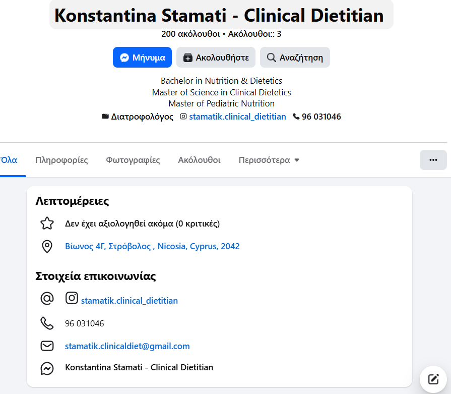

Helping you achieve better health through personalized nutrition.
Contact
Konstantina Stamati is a Clinical Dietitian based in Nicosia, Cyprus. She holds a Bachelor in Nutrition & Dietetics, a Master of Science in Clinical Dietetics and a Master in Pediatric Nutrition.